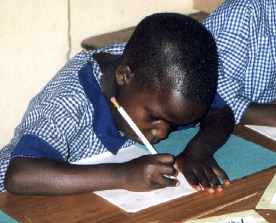
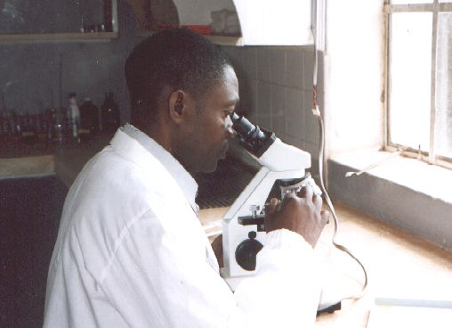
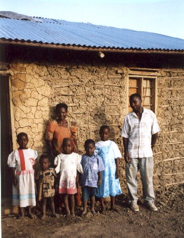

Juni 2003
Bram Moolenaar, penningmeester van ICCF Holland, bezocht het Kibaale Children's centre in juni 2003. Dit is zijn verslag.
Eerste indruk
Het tweede trimester van de school was net begonnen toen ik op het project
aankwam. Kinderen renden rond op het schoolterrein om niet al te laat in de
klas te zijn. Leraren groetten me in het voorbijgaan.
Een van de kinderen trekt mijn aandacht en lacht naar me. Het is Molly, ze
wordt gesponsord sinds 1996. We maken een praatje over hoe het gaat op school
en thuis. Ze woont nu in Kibaale, zodat ze niet meer zo lang hoeft te lopen
naar school. Molly zit in de derde klas van de middelbare school, ze hoopt
volgend jaar de vierde klas af te maken en dan een secretaresse opleiding
te gaan volgen.
Ik heb tijdens mijn bezoek fotos gemaakt. Een aantal is
hier te vinden.
School
|
Het middelpunt van het project is de school, en die groeit voortdurend. Er
zijn nu totaal 620 kinderen in de school. De meesten hiervan zijn
weeskinderen en worden gesponsord. Met in totaal 32 leraren kost het aardig
wat tijd om leiding te geven aan al het personeel. We zorgen voor onderkomen
voor de leraren, omdat ze van verder weg komen. Veel leraren zijn als
alleenstaande begonnen, maar nu zijn er steeds meer die trouwen en een gezin
beginnen. Dit betekent dat er meer huizen nodig zijn. Een blok met twee
eengezinshuizen is recent gebouwd, maar er is nog meer behoefte.
Het plan is om de school te verdubbelen, een klas per jaar. Momenteel zijn de
kleuterschool en de eerste klas van de lagere school dubbel. Volgend jaar
zal ook de tweede klas verdubbeld zijn. Dit betekent dat er meer ruimte nodig
is. Een blok met vier klassen is afgelopen jaar gebouwd. Nog een blok zal
dit jaar moeten volgen (alhoewel hier nog geen geld voor is). Er zijn ook
meer sponsors nodig! Het is nog niet duidelijk hoe we aan het geld komen om
de geplande groei te financieren.
|

|
De vakschool draait dit jaar met ongeveer 35 kinderen die een opleiding volgen
voor kleermaakster, timmerman en bouwvakker. Ik heb de bouwvak klas gezien
toen ze bezig waren met het maken van bakstenen. Dat is nogal zwaar werk,
klei opgraven, mixen en afdekken met gras. Gelukkig is er klei te vinden
vlakbij de school. De leerlingen gaan nog een paar weken door met het
verzamelen van klei (tussen de theorie klasssen door) voordat ze met mallen de
bakstenen vormen die worden gedroogd en dan opgestapeld en gebrand.
Als dit allemaal goed gaat zullen we de zelfgemaakte stenen kunnen gebruiken
voor het uitbreiden van de school.
De middelbare school is verhuisd naar een nieuw blok met ruime klaslokalen.
De oude klassen van de vakschool zijn verbouwd en worden nu gebruikt voor
natuurkunde en scheikunde praktijklessen. Er is een nieuw half-open gebouw
voor de vakschool, wat verder weg van de middelbare school, omdat de
timmerlessen nogal wat lawaai maken.
Een nieuw onderdeel van de school is de klas voor gehandicapte kinderen.
Gehandicapten hebben nauwelijks een kans om een opleiding te krijgen in
Uganda. Het project is gestart met een groep van dove kinderen en een paar
geestelijk gehandicapten. Dit is een uitdaging omdat er nauwelijks ervaring
is op dit gebied. Gelukkig is er een lerares gevonden die enthousiast
begonnen is met lesgeven, onder andere in gebarentaal.
Kliniek
|

|
De kliniek is altijd erg druk. We zijn blij dat een dokter bereid is om een
dag per week naar het project te komen, ook al heeft hij een drukke baan
ergens anders. Twee ervaren verpleegsters behandelen de andere patiënten, en
daarvan zijn er erg veel. Twee assistenten zorgen voor het uitgeven van
medicijnen en inentingen. Een verpleger volgt momenteel een training, als
hij terug komt zal weer een ander op training gaan.
Toen ik het project in 2001 bezocht was het laboratorium in opbouw. Nu
is het volledig operationeel. De technicus heeft me enthousiast
uitgelegd hoe hij een malaria test uitvoert, de meest voorkomende test.
Het is nogal ingewikkeld, een druppel bloed wordt bewerkt door meerdere
chemicaliën en vervolgens onder de microscoop gelegd om te kijken of er
parasieten te vinden zijn. Vele andere testen kunnen worden uitgevoerd,
zoals het tellen van witte bloedcellen en het vaststellen van ziektes als
tyfus, wormen, HIV, gonorroe en syfilis. Dit helpt de verplegers in het
kiezen van de juiste medicijnen en voorkomt dat patiënten naar het ziekenhuis
moeten voor een test (dat is nogal ver weg als je moet lopen).
|
Een keer per week rijdt er een wagen met een verpleger en een koelbox met
inentingen naar een van de omliggende dorpjes om inentingen te verzorgen. Het
plan is om dit binnenkort uit te breiden met het geven van voorlichting,
vooral voor moeders die hun kinderen brengen voor inenting. Er zijn nog
steeds veel misverstanden over wat te doen om ziektes te voorkomen.
Gesponsorde kinderen
Ik heb zeven kinderen thuis opgezocht. De situatie is voor de meeste families
niet anders dan bij mijn laatste bezoek in 2001. De grootmoeder van het kind
dat ik zelf sponsor, Geoffrey Kyomya, is duidelijk gezonder. Ze heeft nog
steeds problemen met haar ogen, maar ze ziet genoeg om te kunnen werken. Ze
lijkt ook een stuk gezonder. Een ander gezin is er eindelijk in geslaagd om
een nieuw huis te bouwen, groter dan het oude en met een golfplaten dak in
plaats van lekkend stro. Maar de muren zijn nog niet afgewerkt.
Nu het aantal gesponsorde kinderen verder gegroeid is, is er een derde kracht
aangenomen om het werk voor de gesponsorde kinderen te verzorgen. Er zijn nu
Cephas, Charles en Rose in het kantoor. Zij handelen alle problemen af die de
gesponsorde kinderen of hun voogd hebben en als een kind niet naar school komt
zoeken ze uit wat de reden is. Voor kinderen die geen engels kunnen schrijven
vertalen ze de brieven naar sponsors. Ze zijn aardig wat tijd kwijt met
bijzondere gevallen, zoals een kind dat naar het ziekenhuis moet en het
opzoeken van kinderen in hun huis (dat alleen bereikbaar is via een smal pad
over de heuvels).
|

|
Conclusie
Het belangrijkste wat ik kan zien is dat het project stabiel is en verder
groeit, steeds meer kinderen worden geholpen. De groei betekend ook dat het
meer werk kost om alle zaken goed te behandelen. Niet alleen met de
behoeftige kinderen, ook met de staf die het project draaiende houdt. Zelfs
een klein iets kan veel tijd kosten in dit afgelegen gebied (we wachtten drie
uur op iemand die een onderdeel van een waterpomp ging ophalen...). Met dit
in gedachten kan ik zeggen dat het project prima draait en ben ik blij zoveel
kinderen weer te zien lachen.
Bram Moolenaar
meer fotos
top
|